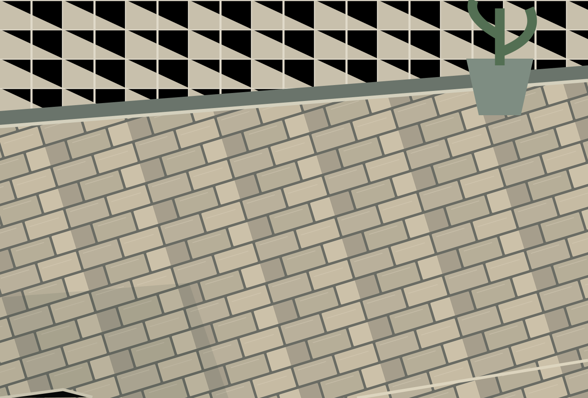

Block paving and drives.
Lifted, cleaned, re sanded and sealed if you want it.

See the difference ↓Original illustrated comparison, not photographs or evidence of a completed job. Dimensions and timings are supplied concept copy.
Lifted, cleaned, re sanded and sealed if you want it.
Gentler. Sandstone and limestone scar easily and we will not risk it.
Soft wash only. Chemicals do the work and the pressure stays low.
Moss scraped, then a professional treatment. Access and tile condition assessed first.
Cleaned and left to dry, then treated if you have asked for it.
Prices include water, power and all chemicals. We do not charge extra for a tap you do not have.
Supplied example prices and service terms. A real provider must confirm scope, condition, access and suitability.
High pressure can damage render, window seals and walls. The proposed method uses a professional low pressure soft wash. A trained operator chooses suitable products and contact time for the surface.
High pressure can damage roof surfaces. The proposed approach is assessed scraping and treatment using appropriate access equipment, not indiscriminate blasting. Results develop over time and vary by roof.
Sound concrete and suitable block paving may benefit from a rotary head after assessment. Surface condition, joints and drainage matter. This page is not a DIY chemical or pressure setting guide.
Tick a local preparation checklist.
0 of 5 preparation items checked.
Example service provisions, to be confirmed in a real quote.
Supplied locations illustrated with original art. These are not verified completed jobs.
“He talked me out of jet washing the render and did a soft wash instead. Cost less and the wall is still intact two winters later.”
Supplied concept testimonial, not a verified outcome.
Example contact details. Attach a photo in your own email app if appropriate. This website uploads nothing, calculates no quote and promises no response time.